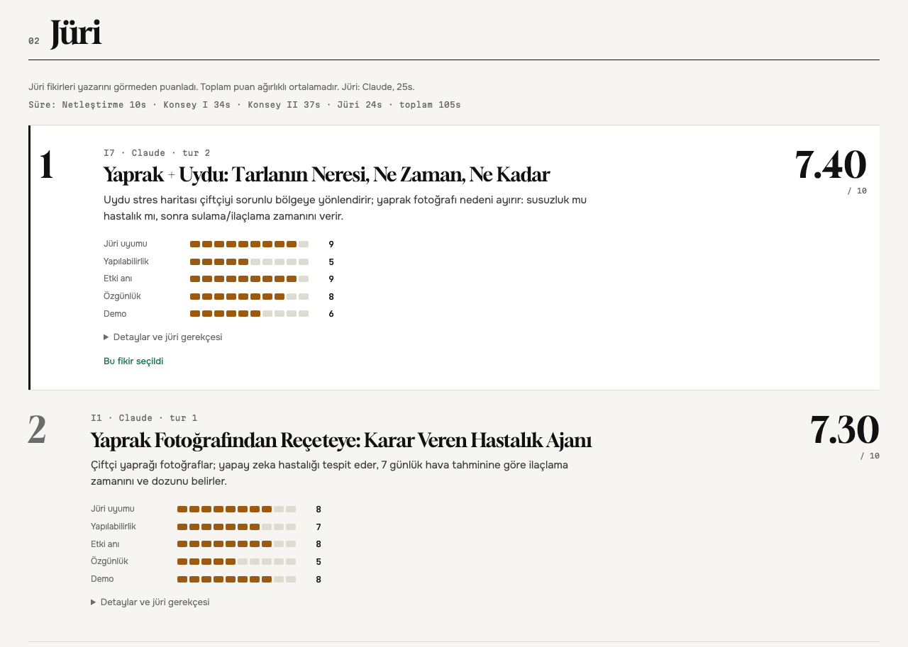
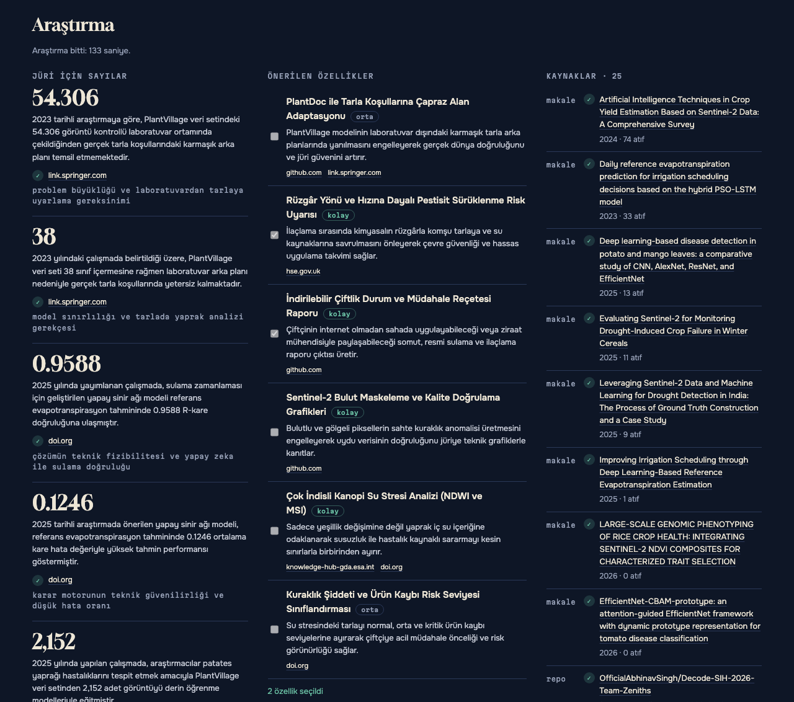
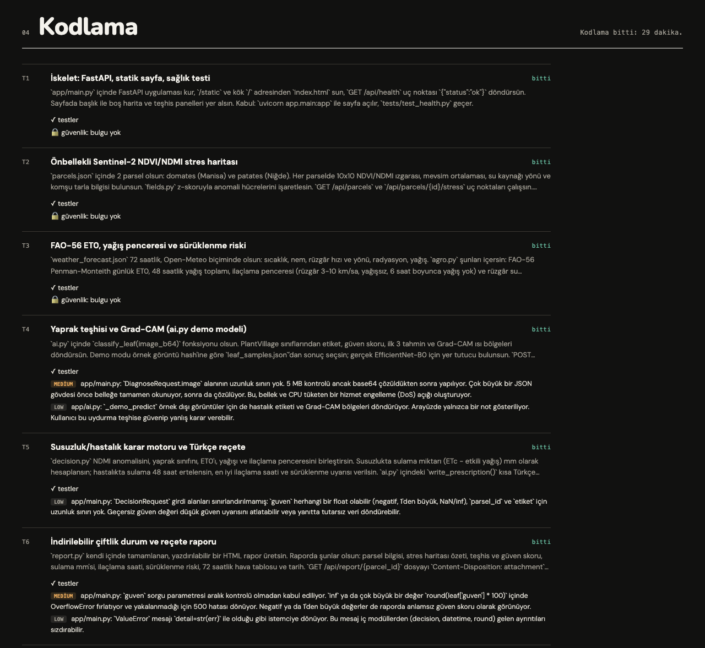
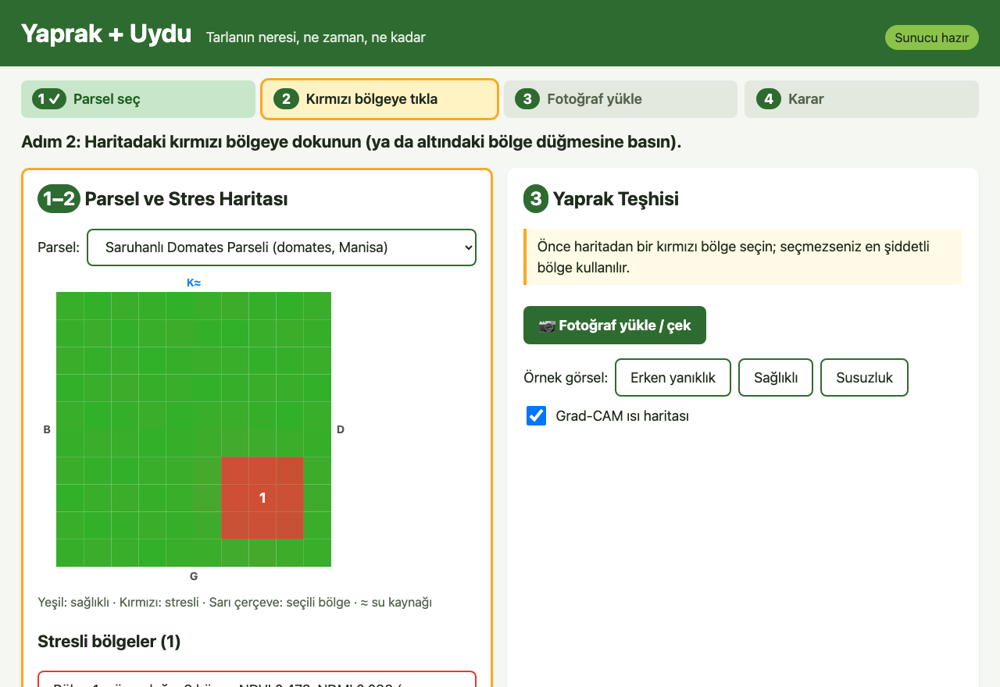
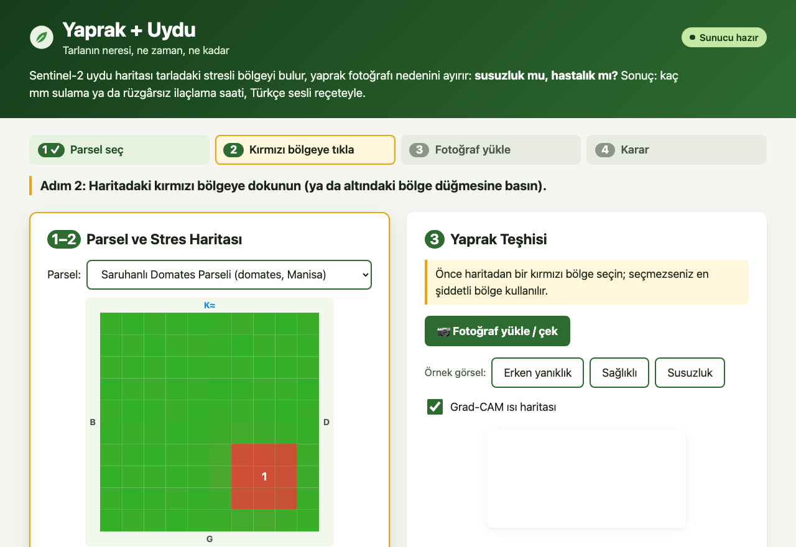

Yerel çoklu ajan uygulaması
Hackathon konusundan çalışan ürüne tek bir boru hattı. Üç yapay zekâ modeli işi yapar, kararları sen verirsin.
Fikir, araştırma, kod ve sunum 24 saate sıkışır.
Bu yüzden ürünün özü kod üreten ajanlar değil, onların hatalarını yakalayan katman.
Üç model fikir üretir ve birbirini eleştirir, jüri puanlar.
gerçek turda 105 sn
👤Makale, repo, web ve video toplanır, her link doğrulanır.
133 sn
👤Görev görev kod, test ve güvenlik incelemesi.
29 dk
👤Arayüz ekran görüntüsüne bakılarak iyileştirilir.
~2 dk
Fikri sen seçersin. Jüri sıralar, karar senin.
Özellikleri sen seçersin. Her biri bir kaynağa dayanır.
Planı ve paketleri sen onaylarsın. Kodlama ondan sonra başlar.

25/25 kaynak gerçek turda doğrulandı.


Demo adımları tarayıcıda oynatılır ve ekran görüntüleri UI ajanına verilir. Test kırılırsa, yeni JS hatası çıkarsa ya da önce çalışan bir demo adımı bozulursa cila tamamen geri alınır.


Seçilen fikir · jüri 7.40 / 10Yaprak + Uydu: uydu haritası stresli bölgeyi bulur, yaprak fotoğrafı nedeni ayırır: susuzluk mu, hastalık mı?
Güvenlik incelemesi 2 medium + 5 low bulgu raporladı. Sonra düzeltildi, bu bulgu tipleri de kodlayıcıya önleyici kural olarak eklendi.
git clone https://github.com/aliandacerdass/HackathonBuilder
cd HackathonBuilder && pip install -r requirements.txt
python -m backend.app # → http://127.0.0.1:8000